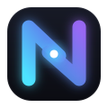

36a · Refined
The baseline, tuned: longer overlap, balanced terminals, white core on a cyan bloom.
Concept 36 expanded into six recipes plus a dedicated favicon cut. Same DNA in all of them: the host's stroke and the viewer's stroke meeting mid-diagonal to form the N.
The baseline, tuned: longer overlap, balanced terminals, white core on a cyan bloom.
The strands stop short and a four-point sparkle bridges the gap — the connection as a spark.
No tile — the mark alone, for the in-app navbar, README, and anywhere the square is too heavy.
Strictly the app's current blues — no cyan/violet — for a quieter, more corporate read.
Heavier stems, bigger footprint, stronger glow — maximum presence in a dock or store listing.

Alternate palette: cyan→blue meets magenta→violet — louder contrast between the two sides.